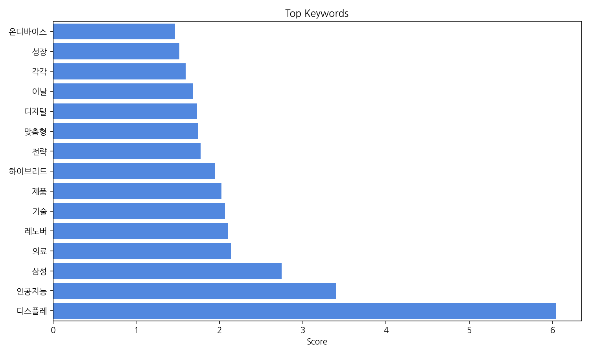
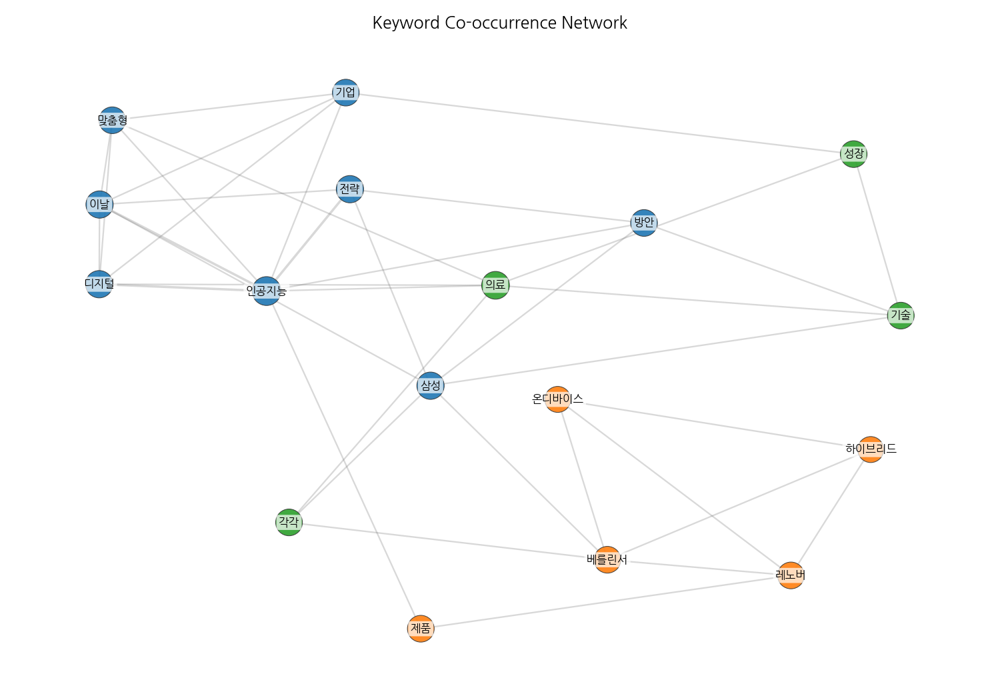
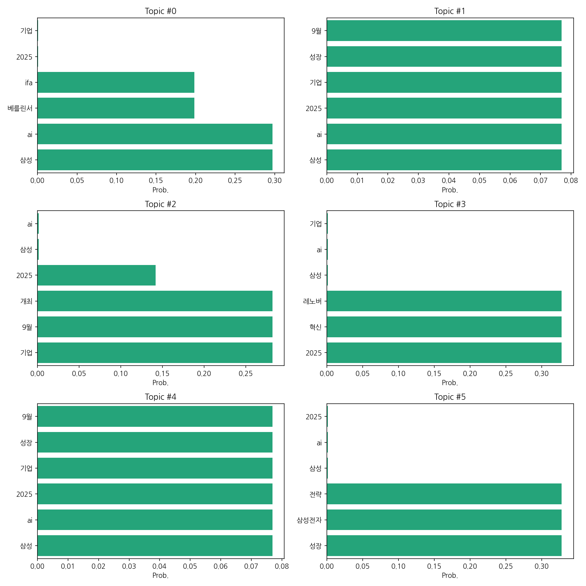

1) 상위 토픽을 묶어 핵심 맥락을 설명하면, 2025년 9월 삼성의 AI 관련 사업 성장 및 혁신 전략 발표와 IFA 2025 참가를 중심으로 한 기사들이 주를 이룹니다. 레노버와의 경쟁 구도 및 미래 성장 동력 확보를 위한 삼성의 AI 기술 투자에 대한 보도가 집중적으로 나타나고 있습니다. 이는 삼성이 AI 분야에서의 경쟁력 강화와 시장 지배력 확대를 위한 적극적인 행보를 보여주는 것으로 해석됩니다.
2) 최근 변화/스파이크는 2025년 9월 5일 20건의 관련 기사가 집중적으로 보도된 점입니다. 이는 삼성의 IFA 2025 참가 및 AI 관련 전략 발표와 직접적으로 연관되어 급증한 것으로 추정됩니다.
3) 실무 인사이트 3가지:
| Rank | Keyword | Score |
|---|---|---|
| 1 | 디스플레 | 6.041 |
| 2 | 인공지능 | 3.403 |
| 3 | 삼성 | 2.746 |
| 4 | 의료 | 2.144 |
| 5 | 레노버 | 2.105 |
| 6 | 기술 | 2.066 |
| 7 | 제품 | 2.025 |
| 8 | 하이브리드 | 1.949 |
| 9 | 전략 | 1.772 |
| 10 | 맞춤형 | 1.746 |
| 11 | 디지털 | 1.732 |
| 12 | 이날 | 1.68 |
| 13 | 각각 | 1.594 |
| 14 | 성장 | 1.52 |
| 15 | 온디바이스 | 1.468 |



1) 상위 토픽을 묶어 핵심 맥락을 설명하면, 2025년 9월 삼성의 AI 관련 사업 성장 및 혁신 전략 발표와 IFA 2025 참가를 중심으로 한 기사들이 주를 이룹니다. 레노버와의 경쟁 구도 및 미래 성장 동력 확보를 위한 삼성의 AI 기술 투자에 대한 보도가 집중적으로 나타나고 있습니다. 이는 삼성이 AI 분야에서의 경쟁력 강화와 시장 지배력 확대를 위한 적극적인 행보를 보여주는 것으로 해석됩니다.
2) 최근 변화/스파이크는 2025년 9월 5일 20건의 관련 기사가 집중적으로 보도된 점입니다. 이는 삼성의 IFA 2025 참가 및 AI 관련 전략 발표와 직접적으로 연관되어 급증한 것으로 추정됩니다.
3) 실무 인사이트 3가지:
| Idea | Target | Value Prop | Score |
|---|---|---|---|
| AI 기반 맞춤형 의료 디스플레이 시스템 | 대형 병원 영상의학과, 중소병원, 의료 영상 분석 기업 | AI 기반 실시간 영상 분석 및 판독 지원으로 의료진의 업무 효율을 높이고, 정확도 향상을 통해 환자 진료 질을 개선합니다. 맞춤형 진단 및 예측 기능을 제공하여 환자 중심의 의료 서비스를 구현합니다. 경쟁사 대비 우수한 AI 알고리즘과 고해상도 디스플레이 기술을 결합한 차별화된 시스템입니다. | 4.0 |
| AI 기반 하이브리드 디스플레이 솔루션 | 게임 개발사, 영상 편집 업체, 디자인 회사, 프리미엄 PC 제조사 | AI 기반으로 사용 환경 및 콘텐츠에 따라 디스플레이 설정을 자동 최적화하여 사용자 경험을 극대화합니다. 하이브리드 기술을 통해 고해상도, 고화질을 유지하면서 에너지 소비 및 발열 문제를 최소화합니다. 경쟁사 대비 우수한 AI 알고리즘과 하이브리드 기술을 결합한 차별화된 솔루션입니다. | 3.8 |
| 삼성 AI 기반 맞춤형 디지털 사이니지 | 대형 쇼핑몰, 백화점, 호텔, 공항 등의 운영사 | AI 기반으로 고객의 선호도 및 행동 패턴을 분석하여 맞춤형 콘텐츠를 제공하고, 광고 효과를 극대화합니다. 다양한 표현 방식을 지원하여 시각적 효과를 높이고, 에너지 소비를 최소화하는 친환경 기술을 적용합니다. 경쟁사 대비 우수한 AI 알고리즘과 디스플레이 기술을 결합한 차별화된 제품입니다. | 3.5 |
| 온디바이스 AI 기반 스마트 디스플레이 | 개인 사용자, 스마트홈 구축 업체 | 온디바이스 AI를 통해 네트워크 연결 없이도 다양한 기능을 사용할 수 있으며, 개인정보 유출 위험을 최소화합니다. 사용자의 선호도에 맞춰 디스플레이 설정을 자동으로 조정하고, 맞춤형 콘텐츠를 제공합니다. 경쟁사 대비 우수한 AI 알고리즘과 고성능 프로세서를 탑재한 차별화된 제품입니다. | 3.2 |
| AI 기반 차세대 게임용 디스플레이 | 게임 개발사, 게임 유통 플랫폼, 게이밍 PC 제조사, 하드웨어 매니아 | AI 기반으로 사용자의 게임 플레이 패턴을 분석하여 최적의 디스플레이 설정을 자동으로 조정하고, 실시간으로 게임 환경에 대한 피드백을 제공합니다. 눈의 피로도를 줄이는 기능을 탑재하고, 몰입감 높은 게임 경험을 제공합니다. 경쟁사 대비 우수한 AI 알고리즘과 고성능 디스플레이 기술을 결합한 차별화된 제품입니다. | 3.0 |